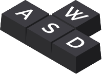
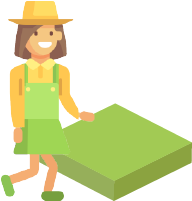
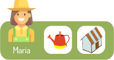
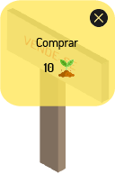

Usa estas teclas para mover a personagem.

Leva a personagem ao terreno para abrir
o mercado para comprar sementes das árvores.

Trata das plantações após as catástrofes
ao clique do regador ou da estufa.

Clica nas placas de "Vende-se" para comprar terrenos.

Caminha para a porta da casa
para ver informações das árvores.